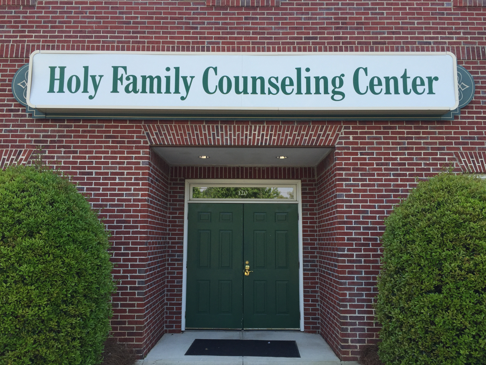

Make An Appointment:
(678) 993-8494
holyfamilycouncelingcenter@gmail.com
Click HERE for All Locations
What We Help
Stress
Got stress? We all do! It’s how well you handle it that affects your health positively or negatively. Our therapists are able to help you find ways to decrease your stress levels. Simply talking through your struggles with a therapist can be a relief. We can help you to find better ways to handle stress enabling you to add to your toolbox of coping skills.
Stress is an emotional, physiological, and adaptive response to stimuli in the environment. Although some stress serves as highly beneficial to human functioning and efficiency, it can also be damaging to our health if it occurs frequently and over an extended period of time. Chronic stress can negatively affect all of the body’s organs and systems. Repeatedly undergoing the fight or flight response, for instance, contributes to greater wear and tear on artery walls, consequently increasing the risk of heart attack. Chronic stress can also lead to memory loss, decreased immunity to viruses, and increased inflammation.
To make an appointment, please call Holy Family Counseling Center at 678-993-8494.
"Learning to live in the moment is the path of joy."
Sarah Ban Breathnach
Anxiety
Is anxiety interfering with your life as you would like it? Do you wish you knew how to make it go away? We can help ease the anxiety that is keeping you from feeling strong and healthy. Everyone experiences some anxiety in life, but at times it begins to take over. Anxiety is a feeling of fear and dread with no real object in mind and can be difficult to recognize its cause. Anxiety can result in panic attacks, trouble sleeping, shortness of breath, excessive worry. The therapists at Holy Family Counseling Center can provide you with new tools and strategies to relieve you of anxiety.
To make an appointment, please call Holy Family Counseling Center at 678-993-8494.
“May the God of hope fill you with all joy and peace in believing, so that by the power of the Holy Spirit you may abound in hope.”
Romans 15:13
Depression
Are you feeling hopeless, or sad, and you can't seem to shake it? Are you snapping at people and more irritable without a reason? No energy and loss of interest in normal activities? Feeling stuck? Not sleeping? Not eating? Sleeping too much? Eating too much? You could be suffering from depression. Depression affects people in many different ways. Depression is the “common cold” of our emotional world. Holy Family Counseling Center has trained professionals that can help you start your journey back to feeling the healthy “you”.
To make an appointment, please call Holy Family Counseling Center at 678-993-8494.
“The Lord himself goes before you and will be with you; he will never leave you nor forsake you. Do not be afraid; do not be discouraged.”
Deuteronomy 31:8
Trauma
When past wounds interfere with your everyday life, we are here to help you in your healing journey. Trauma can involve one devastating incident or years of abuse and neglect. It can take many forms: physical, emotional, psychological, spiritual, and/or sexual. Holy Family Counseling Center uses a trauma-informed approach to treatment with empirically validated treatments such as CBT and EMDR. We also include a spiritual healing component , if desired. Since we often manage our past wounds in unhealthy ways, it helps to learn ways to cope with current stressors, heal relationships, and experience life to the fullest. Although trauma can be devastating, it does not have to rule your life. We are here to help you find peace and a new sense of joy and freedom.
To make an appointment, please call Holy Family Counseling Center at 678-993-8494.
"Getting over a painful experience is much like crossing monkey bars. You have to let go at some point in order to move forward”.
C.S. Lewis
Self Esteem
What defines your sense of worth? Do you look to external channels (achievements, talents, trophies etc.) to prove that you are good enough? And once attained, how long does it last until you need to go after the next best thing? When our self-worth is dependent upon external means it will inevitably disintegrate. True confidence is not dependent upon what one has achieved but rather by the internal awareness that your dignity comes from God. The development of self-knowledge is a life long journey. In coming to know who you are as a child of God can you travel down the path towards becoming (as Mathew Kelley describes) the best version of yourself.
To make an appointment, please call Holy Family Counseling Center at 678-993-8494.
“Anyone who belongs to Christ is a new person. The past is forgotten, and everything is new.”
2 Corinthians 5:17
Life Transitions
Life transitions whether positive or negative can cause a new type of stress in our lives. Situations such as a change in marital status, dealing with children from birth to school, college, adult children situations, menopause, mid-life, occupational changes, premarital, living alone, living the single life, elderly parents, and many more can surprise you at your own reaction. The therapists at Holy Family Counseling Center recognize that life comes with many challenges and curveballs. Adapting to change and enduring the stress and anxiety that accompanies this change can be more difficult than you anticipated. We can help you move through the maze of these changes in your life and cope with them.
To make an appointment, please call Holy Family Counseling Center at 678-993-8494.
“Do not look forward to what may happen tomorrow; the same everlasting Father who cares for you today will take care of you tomorrow and every day. Either He will shield you from suffering, or He will give you unfailing strength to bear it. Be at peace, then, put aside all anxious thoughts and imaginations, and say continually: The Lord is my strength and shield; my heart has trusted in Him and I am helped. he is not only with me, but in me and I in Him.”
Francis de Sales
Family Conflicts
Do you want more peace in your family life? Are you tired of feeling like no one understands or respects one another?
Every family sees days of sunshine and stormy weather. Conflict and disagreement is an intricate part of human relationships. Feelings get hurt, tensions build, and things get said that we later regret. The deepest wounds of the human heart are often inflicted by the ones you love most. It is from this place of hurt that one will overreact (yelling, nagging, blaming, name calling) or under react (withdrawing, being distant, numb). When left unaided over time, a summer storm can morph into a category five hurricane with no end in sight. Underneath all the ruckus is a desperate desire to mend the ruptured bonds that bind the family together. We can help you and your family come out of the storm strengthened and more unified.
To make an appointment, please call Holy Family Counseling Center at 678-993-8494.
"The love that family members have for each other is the chief wealth of every home.”
Author Unknown

Relationship Issues
Are you struggling in a dead end relationship? Do you wish the relationship you have can improve? Do you wonder why you can’t keep friends or are avoiding people? We can help you develop and grow and heal in relationship to others. At Holy Family Counseling Center, we can help you flourish in your relationships and guide you to keep them strong and lasting. Relationships are formed from the time one is born, beginning with a child and its’ mother. This portrays the significance and deliberateness of our need for relationships. Whether they are basic relationships such as ones with your siblings and parents, romantic relationships, or the relationships you form with friends, their success or failure can have a strong emotional impact..
To make an appointment, please call Holy Family Counseling Center at 678-993-8494.
“It is to those who have the most need of us that we ought to show our love more especially.”
Saint Francis de Sales

Teen Issues
The teenage years can be unsettling and challenging. Our counselors at Holy Family understand the emotional, physical, moral, and psychological changes that occur during adolescence and are prepared to help your teen with facing this transitional period. Our counselors stay up to date on the many unique issues that teens deal with in today’s world, such as self esteem and body image, stress, depression, substance use, social media, and bullying.
To make an appointment, please call Holy Family Counseling Center at 678-993-8494.
Growing up is hard.
Addiction
Do you wonder if your life is out of control? Do you turn to alcohol, drugs, video games, gambling, sex or pornography have too strong an influence on your life? Have loved ones questioned your use of any of these? Have you ever wondered if any of these escapes are actually making your life worse? If you answered yes to any of these questions, or have thought that maybe you are addicted, however slightly, the therapists at Holy Family Counseling Center are here to help.
Addiction is a process, not an event. No one wakes up in the morning and decides that they are going to be an alcoholic, a sexaholic, or any other type of addict. Over time, people find methods to help make life more manageable and these methods have the ability to become toxic. Addiction counseling helps clients retake control of their lives.
To make an appointment, please call Holy Family Counseling Center at 678-993-8494.
"Patience and perseverance have a magical effect before which difficulties disappear and obstacles vanish”.
John Quincy Adams

Codependency
Codependency is an unhappy and unhelpful emotional or psychological dependence on someone else which creates a spiral in a relationship. This results in both people feeling uncomfortable in the relationship. It tends to develop in friendships, families, or marriages where a strong imbalance of responsibility and irresponsibility exist, such as in addiction, long term illness, or absentee parenting to name a few. It can start with one being too helpful or one leaning on another too heavily. Being in therapy can help you break this cycle that causes relationships that bring harm instead of health to the relationship.
To make an appointment, please call Holy Family Counseling Center at 678-993-8494.
I’m not ok, unless your is ok.
Internet Compulsions
The internet and various phone apps have become a fun and useful tool for every walk of life. The use of technology and the internet in particular can be a source of enjoyment, education, and business use. What happens when that source becomes more than just useful? Do you find yourself surfing the web for hours on end with no purpose in mind? Do you feel more at home with online friends than with your real friends or family?
Determining whether a habitual behavior has become a problem begins with evaluating the benefits of internet use and the feelings and beliefs surrounding it. Internet Compulsivity can be determined by feelings of distress, guilt, or shame that arise. Holy Family Counseling Center can assist you with determining the difference between a passionate hobby and a compulsive behavior.
To make an appointment, please call Holy Family Counseling Center at 678-993-8494.
"Your conscience can’t keep you from doing wrong, it just keeps you from enjoying it".
Attributed to Winston Churchill
Sexual Compulsions
Many men and women struggle in silent shame with sexual behaviors that seem out of control. I have tried to stop on my own, but I can’t. In some cases the behavior affects work, finances, health, or relationships. If others knew about this, they would reject me. We are here to help if there is a sexual behavior that has negatively impacted your life. Holy Family Counselors offer a non-judgmental approach to treat any range of sexual issues that individuals may face. When treating sexual compulsions and addictions, we use a trauma informed approach influenced by researchers such as Patrick Carnes and Mark Laaser. Additionally, we offer programs for spouses and families that are affected. We also treat other sexual issues such as lack of sexual desire, premature ejaculation, painful intercourse, and issues related to celibacy and natural family planning.
To make an appointment, please call Holy Family Counseling Center at 678-993-8494.
“Out of the Shadow of the Web”
~ Patrick Carnes
Social Media Issues
Do you ever wonder how many times a day you check your phone? Recent research indicates that on average, we check our phones and log into social media apps 150 times a day! Excessive social media use has been linked with depression, negative body images, and other mental health issues. Use of these apps can increase anxiety levels, negatively affect relationships, and even affect the quality and duration of our sleep.
On a positive note, social media allows us to keep in contact with friends and family near and far. It can be a source of humor, news, and other information that is valuable. While we know that everything in moderation is good, there are many instances where social media use can cross the line from helpful to hurtful.
Do you think that you may check Facebook, Twitter, Snapchat, Whisper, or any other app too often? Do you turn to friends on apps more than your friends in person? Do you see things on social media that make you angry, hurt, or otherwise more upset than you would be in real life? The therapists at Holy Family Counseling Center can help you find a balance in your use of this verbasive, but helpful tool.
To make an appointment, please call Holy Family Counseling Center at 678-993-8494.
Are they really your friends?
Every digital picture on social media is encrypted with a GPS location.
Anger Management
Are your spouse or friends complaining of your short temper? Are you breaking out in outbursts more than normal? Most angry behaviors are not a healthy release as many believe. Numerous research studies show that “venting” anger actually increases it in most people. Anger is not an uncontrollable “animal instinct” as many believe. Acting angrily is simply an unhealthy habit which can be broken with knowledge, guidance, and discipline. The therapists at Holy Family Counseling Center guide clients in learning how to regulate one’s anger and express it in healthy ways.
To make an appointment, please call Holy Family Counseling Center at 678-993-8494.
"Anger is only one letter short of danger.”
Footprints in Heart by Eleanor Roosevelt
Grief and Loss
Grief is a natural response to loss. The death of a loved one and divorce or relationship break up are the most frequent causes of grief. However, any loss can trigger grief. Losing a job, retirement, loss of a cherished dream, a loved one’s serious illness, loss of a friendship, loss of safety after a trauma, and loss of health are all good examples of struggles potentially leading to grief. Grief cannot be rushed.
It is a process that is different for every individual and their situation. Holy Family Counseling Center has counselors that are equipped to help navigate through this difficult process. Having someone to accompany you on this journey can be a comfort during a troubling time that can be confusing and even heartbreaking. It would be a privilege to walk with you at this crossroads in your life.
To make an appointment, please call Holy Family Counseling Center at 678-993-8494.
“Listen and let it penetrate your heart…do not be troubled or weighed down with grief. Do not fear any illness or vexation. Am I not here who am your mother? Are you not under my shadow and protection? Are you not in the folds of my mantle? In the crossing of my arms? Is there anything else you need?”
Our Lady of Guadalupe
Career Counseling
Are you at a crossroads in your life? Do you feel confused and unsure of the next steps you need to take in meeting your goals?
Career counseling can assist you in discovering what the best potential career paths could be for you. This process would include taking into consideration your abilities, gifts, strengths, and weaknesses. By identifying your passions, dreams and capabilities, it’s possible to find a career you could truly love and enjoy. Holy Family Counseling Center can guide and support you in this important journey. Your job and vocation in life is far more than just a paycheck. It is the discovery of why you were created, and how you can make a difference in this world. It would be an honor to help you explore options for your exciting future meeting your full potential in life.
To make an appointment, please call Holy Family Counseling Center at 678-993-8494.
"For I know the plans I have in mind for you, says the LORD, plans for your welfare, not for woe! Plans to give you a future full of hope. When you call me, when you go to pray to me, I will listen to you. You will seek me and find me when you seek me with all your heart.”
Jeremiah 29:11-13
Premarital Counseling
Have you met someone that you think might be “the one”? Do you and your loved one want to talk with someone who can help you decide if marriage is meant for you? The counselors at Holy Family Counseling Center are equipped to help couples prepare for marriage by guiding them towards a loving and generous relationship. We help couples explore the intent of marriage as a sacrament and learn about love as defined through the Theology of the Body. Potential issues that could result in problems that may come up during marriage are explored as well as addressing unresolved issues from the past. We can work with you before, during, or after your premarital classes, helping you work to discover your mutual goals, work through issues you have recognized, or just learn more about how a lifetime of love can nurture and grow for you.
To make an appointment, please call Holy Family Counseling Center at 678-993-8494.
"Your wedding lasts a day, but your marriage lasts a lifetime." The Church encourages couples to invest time and energy into the all-important work of preparing for their married life together.
Theology of the Body
Marriage Enrichment
Holy Family Counseling is dedicated to providing the tools for you and your spouse to work towards having a loving, fulfilling, and committed marriage. We will guide you in your communication skills, help you get rid of any habits that may hurt your marriage, and help partners know how to enjoy spiritual fulfillment together.
To make an appointment, please call Holy Family Counseling Center at 678-993-8494.
“To love at all is to be vulnerable. Love anything and your heart will be wrung and possibly broken. If you want to make sure of keeping it intact you must give it to no one, not even an animal. Wrap it carefully round with hobbies and little luxuries; avoid all selfishness... It will not be broken; it will become unbreakable, impenetrable, irredeemable. To love is to be vulnerable.”
C.S. Lewis
Parenting
Do you want to be a better parent? Do you feel at a dead end dealing with certain issues with your children or spouse?
Parenting is one of the most rewarding and yet challenging things a person will ever do. There are so many outside influences on the family today which affect all members. The deep love and yet conflicting feelings a parent experiences with a child can be confusing and discouraging. Often parents feel lost in what to do to help their child become the person God intended them to be. Some of the challenges that parents might face are conflicting parenting styles between the mother and father, a trauma, personality, differences, or other life struggles with the child. It is essential for the parents and home to be a safe haven for each child. Holy Family would be honored to help you, the parents, be strong and loving parents unique to each child.
To make an appointment, please call Holy Family Counseling Center at 678-993-8494.
“The fault of children are not always imputed to the parents, especially when they have instructed them and given good example. Our Lord in his wondrous providence allows children to break the hearts of devout fathers and mothers. The decisions that your children have made do not make you a failure in God’s eyes. Commend your children to the Immaculate Heart of Mary. At the end of each decade say to her, with these beads bind my children to your Immaculate Heart. She will attend to their souls. “
Saint Louise de Marillac
Children Issues
Has one of your children been traumatized? Is there one that you just can’t figure out how to help? Did you lose the owner’s manual?
Children are a precious gift from God but sometimes parents struggle with what to do. Childhood is the time when the foundation of who we are is set. Holy Family Counseling Center is here to help you wade through issues that your child struggles with such as behavioral issues, ADD/ADHD, Aspergers’, trauma, attachment styles and more. Using the sand tray, family systems theory, and other specific methodologies, we can help. You don’t have to do this alone.
To make an appointment, please call Holy Family Counseling Center at 678-993-8494.
“Children are the greatest gift God gives us.”
Blessed Mother Teresa
Nutrition
Nutrition is often overlooked as a contributing factor to our mental health. However, at Holy Family Counseling Center, we believe that we are made up of body, mind and soul. Addressing each person holistically as a unique individual with unique challenges can help bring people back to optimal wellness. Research is pointing to what goes on in the gut affects mood, depression, anxiety, and ADHD. Holy FAmily is proud to have a licensed therapist and certified Transformational Nutrition Coach who can help with this specific issue.
To make an appointment, please call Holy Family Counseling Center at 678-993-8494.
“The doctor of the future will no longer treat the human frame with drugs, but rather will cure and prevent disease with nutrition.”
Thomas Edison


HOLY FAMILY: COUNSELING FROM A CATHOLIC CHRISTIAN PERSPECTIVE AND PLACES VALUE IN THE FAMILY AS WELL AS THE DIGNITY OF THE INDIVIDUAL.



Holy Family Counseling Center Provides
Holy Family Counseling Center is made up of Catholic therapists of varying backgrounds who have come together to offer aid to those who wish to receive counseling and psychotherapy that will not compromise their personal value system.
We provide counseling from a Catholic, Christian perspective for couples, individuals and families placing value in the dignity of the individual and marriage as well as the family.
- Learn More About Holy Family Counseling Center
- Our Staff
- Make An Appointment
- Frequently Asked Questions
Let Us Help
Contact Information
Main Duluth Location
1810 Peachtree Industrial Blvd #120
Duluth, GA 30097
Phone: (678) 993-8494
Fax: (678) 473-7972
Click HERE ALL Locations
Main Information